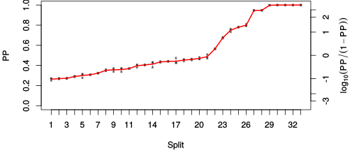

| chain # | burnin | subsample | Iterations (remaining) | command line | subdirectory | directory |
|---|---|---|---|---|---|---|
| 1 | 10000 | 1 | 90000 | /usr/local/bali-phy-3.0-beta2/bin/bali-phy E6_AA_red3_PerissoArtio_Lambda_Alpha_all4Manatees_BetaGamma.fas -s 72612 -n E6_red3_PerissoArtio_Lambda_Alpha_all4Manatees_BetaGamma_c1 | E6_red3_PerissoArtio_Lambda_Alpha_all4Manatees_BetaGamma_c1-1 | /home/willemse/data/trees/BaliPhy/E6 |
| 2 | 10000 | 1 | 90000 | /usr/local/bali-phy-3.0-beta2/bin/bali-phy E6_AA_red3_PerissoArtio_Lambda_Alpha_all4Manatees_BetaGamma.fas -s 67243 -n E6_red3_PerissoArtio_Lambda_Alpha_all4Manatees_BetaGamma_c2 | E6_red3_PerissoArtio_Lambda_Alpha_all4Manatees_BetaGamma_c2-1 | /home/willemse/data/trees/BaliPhy/E6 |
| 3 | 10000 | 1 | 90000 | /usr/local/bali-phy-3.0-beta2/bin/bali-phy E6_AA_red3_PerissoArtio_Lambda_Alpha_all4Manatees_BetaGamma.fas -s 52164 -n E6_red3_PerissoArtio_Lambda_Alpha_all4Manatees_BetaGamma_c3 | E6_red3_PerissoArtio_Lambda_Alpha_all4Manatees_BetaGamma_c3-1 | /home/willemse/data/trees/BaliPhy/E6 |
| P(data|M) = -9748.195 +- 0.250 | Complete sample: 261839 topologies | 95% Bayesian credible interval: 248354 topologies |
Phylogeny Distribution

| Partition support: Summary |
| Partition support graph: SVG |
{kind=link}
| 50% consensus | Newick (+PP) | SVG | |||||
| 66% consensus | Newick (+PP) | SVG | |||||
| 80% consensus | Newick (+PP) | SVG | |||||
| 90% consensus | Newick (+PP) | SVG | |||||
| 95% consensus | Newick (+PP) | SVG | |||||
| 99% consensus | Newick (+PP) | SVG | |||||
| 100% consensus | Newick (+PP) | SVG | |||||
| MAP | Newick (+PP) | SVG | |||||
| greedy | Newick (+PP) | SVG |
{kind=link}
{kind=link}
{kind=link}
{kind=link}
{kind=link}
{kind=link}
{kind=link}
{kind=link}
Alignment Distribution
Partition 1
| Diff | Min. %identity | # Sites | Constant | Informative | ||||
|---|---|---|---|---|---|---|---|---|
| Initial | FASTA | HTML | Diff | 1.09% | 274 | 1 (0.365%) | 185 (67.5%) | |
| Best (WPD) | FASTA | HTML | AU | 8.63% | 630 | 9 (1.43%) | 151 (24%) |
Mixing
{kind=link}
{kind=link}
| burnin (scalar) | ESS (scalar) | ESS (partition) | ASDSF | MSDSF | PSRF-CI80% | PSRF-RCF |
|---|---|---|---|---|---|---|
| 2213 | 1047 | 1015.614 | 0.008 | 0.029 | 1.001 | 1.009 |
Projection of RF distances for the first 3 chains3D | Variation of split PPs across chains |
Scalar variables
| Statistic | Median | 95% BCI | ACT | ESS | burnin | PSRF-CI80% | PSRF-RCF |
|---|---|---|---|---|---|---|---|
| prior | -409.7 | (-458.1, -366.6) | 79.56 | 3393 | 1698 | 1.001 | 1.006 |
| prior_A1 | -506.6 | (-551.4, -467.2) | 66.96 | 4032 | 1698 | 1 | 1.009 |
| likelihood | -9722 | (-9748, -9695) | 59.26 | 4556 | 284 | 1 | 0.9975 |
| logp | -1.013e+04 | (-1.017e+04, -1.009e+04) | 49.45 | 5460 | 2036 | 1 | 1.005 |
| Heat.beta | 1 | ||||||
| Scale1 | 17.74 | (12.78, 23.47) | 1.044 | 258712 | 105 | 1 | 0.9998 |
| S1.F.pi.A | 0.05643 | (0.04784, 0.06531) | 8.091 | 33370 | 233 | 0.9999 | 1.001 |
| S1.F.pi.R | 0.06612 | (0.05618, 0.07654) | 10.42 | 25916 | 282 | 1 | 0.9972 |
| S1.F.pi.N | 0.0314 | (0.0252, 0.0381) | 8.935 | 30219 | 755 | 1 | 0.9949 |
| S1.F.pi.D | 0.05237 | (0.04377, 0.06143) | 8.966 | 30112 | 345 | 1 | 1.006 |
| S1.F.pi.C | 0.06101 | (0.05006, 0.0722) | 8.225 | 32827 | 860 | 1 | 1.006 |
| S1.F.pi.Q | 0.03476 | (0.02881, 0.04106) | 8.714 | 30985 | 213 | 1 | 1.001 |
| S1.F.pi.E | 0.0579 | (0.04891, 0.06716) | 9.185 | 29396 | 385 | 0.9997 | 1.008 |
| S1.F.pi.G | 0.06931 | (0.05731, 0.08166) | 8.725 | 30947 | 243 | 1 | 0.9978 |
| S1.F.pi.H | 0.0266 | (0.02083, 0.03291) | 8.151 | 33123 | 475 | 0.9996 | 0.9961 |
| S1.F.pi.I | 0.04866 | (0.04096, 0.05689) | 8.922 | 30262 | 414 | 1 | 1.003 |
| S1.F.pi.L | 0.1106 | (0.09704, 0.1248) | 10.07 | 26816 | 219 | 0.9999 | 1.003 |
| S1.F.pi.K | 0.04577 | (0.03859, 0.05363) | 8.499 | 31769 | 262 | 1 | 1.004 |
| S1.F.pi.M | 0.009477 | (0.006366, 0.01292) | 7.682 | 35147 | 644 | 1 | 0.9936 |
| S1.F.pi.F | 0.05388 | (0.04468, 0.06344) | 8.245 | 32745 | 294 | 1 | 0.9989 |
| S1.F.pi.P | 0.04006 | (0.03158, 0.04906) | 9.54 | 28301 | 299 | 1 | 0.9996 |
| S1.F.pi.S | 0.05454 | (0.04642, 0.06286) | 8.24 | 32769 | 756 | 1 | 0.9975 |
| S1.F.pi.T | 0.05351 | (0.04521, 0.0623) | 8.687 | 31079 | 337 | 1 | 0.9993 |
| S1.F.pi.W | 0.01825 | (0.01275, 0.02419) | 8.003 | 33738 | 472 | 0.9999 | 0.9995 |
| S1.F.pi.Y | 0.05223 | (0.04358, 0.0615) | 8.478 | 31848 | 365 | 0.9999 | 0.9993 |
| S1.F.pi.V | 0.05474 | (0.04624, 0.06381) | 9.203 | 29339 | 422 | 0.9999 | 0.997 |
| I1.RS07.meanIndelLengthMinus1 | 9.156 | (6.528, 12.33) | 9.393 | 28746 | 247 | 1 | 0.9986 |
| I1.RS07.logLambda | -4.697 | (-5.006, -4.393) | 12.05 | 22409 | 209 | 1 | 1.002 |
| |A1| | 554 | (519, 592) | 257.9 | 1047 | 2210 | 0.9931 | 0.983 |
| #indels1 | 56 | (51, 62) | 83.26 | 3242 | 1653 | 0.913 | 1.008 |
| |indels1| | 505 | (457, 563) | 87.47 | 3086 | 884 | 0.9859 | 0.9979 |
| #substs1 | 1906 | (1870, 1935) | 229.4 | 1176 | 2213 | 0.9844 | 0.9857 |
| Scale1*|T| | 23.22 | (21.97, 24.54) | 8.749 | 30861 | 95 | 0.9998 | 0.9992 |
| |A| | 554 | (519, 592) | 257.9 | 1047 | 2210 | 0.9931 | 0.983 |
| #indels | 56 | (51, 62) | 83.26 | 3242 | 1653 | 0.913 | 1.008 |
| |indels| | 505 | (457, 563) | 87.47 | 3086 | 884 | 0.9859 | 0.9979 |
| #substs | 1906 | (1870, 1935) | 229.4 | 1176 | 2213 | 0.9844 | 0.9857 |
| |T| | 1.309 | (0.9488, 1.724) | 1.016 | 265773 | 128 | 1 | 1 |